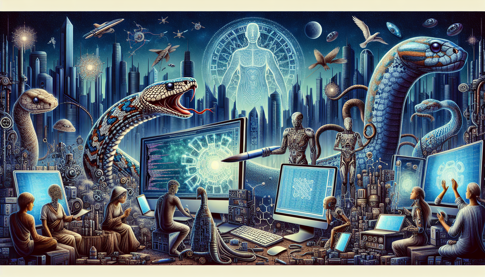

Python and the Future of AI
Python has become a popular programming language for AI and machine learning due to its flexibility, ease of use, and powerful libraries. With its simple syntax and vast array of libraries like TensorFlow and Scikit-learn, Python has made it easier for developers to build and train complex AI models.
In the future, we can expect to see even more advancements in AI powered by Python. Its growing community of developers and continuous development of libraries make it a strong contender in the world of AI. As we continue to collect and analyze massive amounts of data, Python's ability to handle and process large datasets will only become more valuable in the development of intelligent systems. Furthermore, with the rise of automation and the need for more efficient processes, Python's capabilities in data analysis and automation will make it a crucial tool for businesses and organizations looking to incorporate AI into their operations. Overall, Python is paving the way for the future of AI and will continue to be a key language in the advancement of technology.